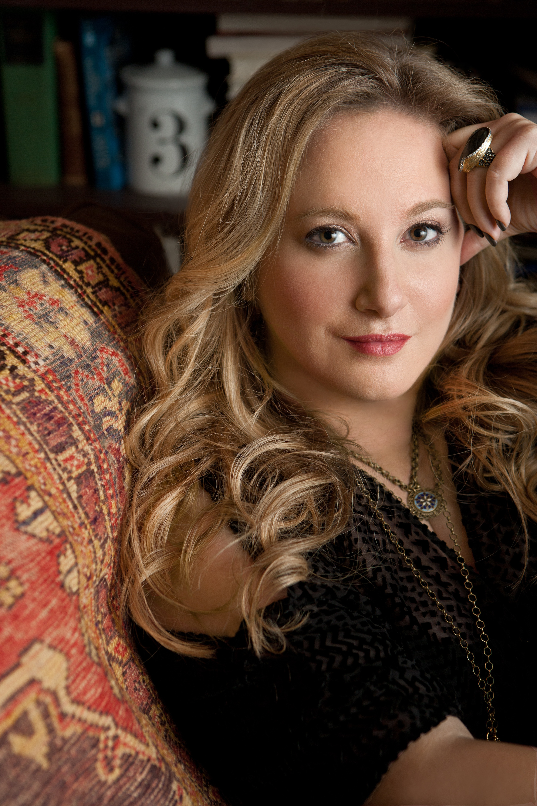

Ли Бардуго
Ли Бардуго (Leigh Bardugo) — американская писательница, автор фэнтези-бестселлеров, в том числе цикла «Гриши» и других произведений. Её книги переведены на 38 языков и изданы в более чем 50 странах.
Родилась 6 апреля 1975 года в Иерусалиме, но вскоре переехала с семьёй в США, где выросла в Лос-Анджелесе. В 1997 году получила диплом Йельского университета по специальности «Английский язык».
Библиография
У автора издано: 10 книг.
ГришиВерс
- «Тень и кость»
- «Штурм и буря»
- «Крах и восход»
- «Шестёрка воронов»
- «Продажное королевство»
- «Король шрамов»
- «Правление волков»
- «Девятый дом»
Цикл про Алекс Стерн
- «Одержимый»
- «Фамильяр»
Личная жизнь
В 2022 году она тайно вышла замуж за партнёра, с которым до этого прожила около четырёх лет. При этом писательница просит не раскрывать имя супруга в публикациях — для неё это личная, закрытая от прессы сфера. Пара познакомилась в Сан-Диего.
В каких жанрах работает
- фэнтези
- боевое фэнтези
- экшен
- художественная литература
- серия книг